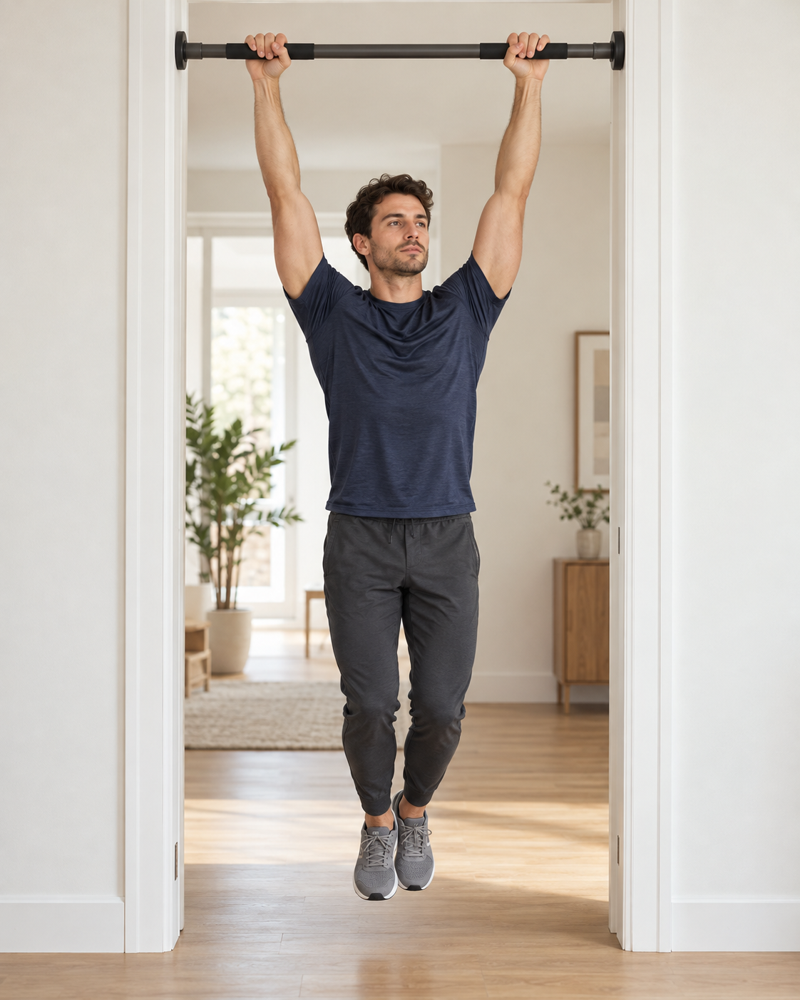
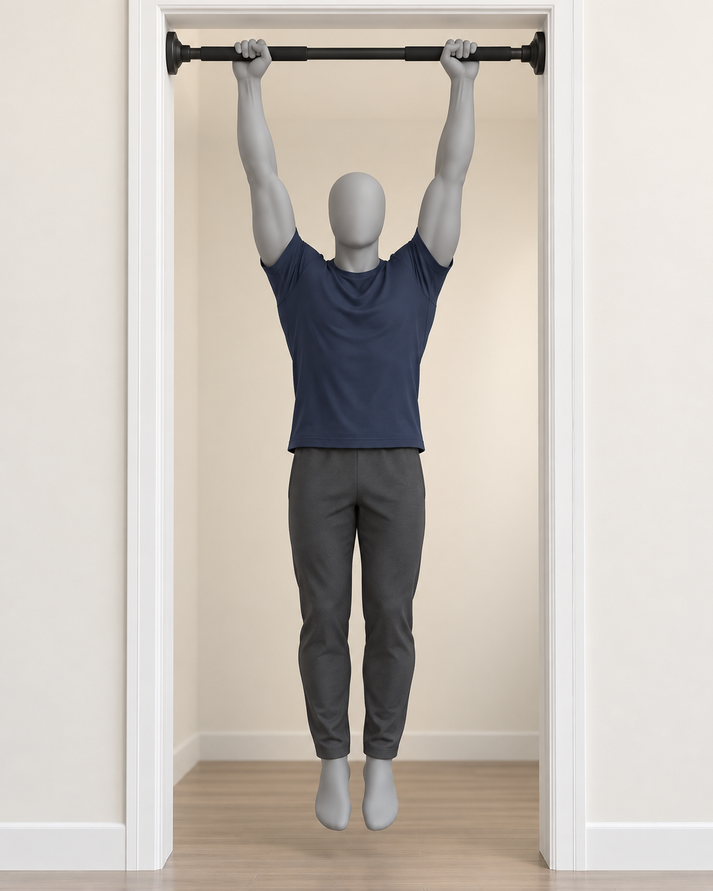
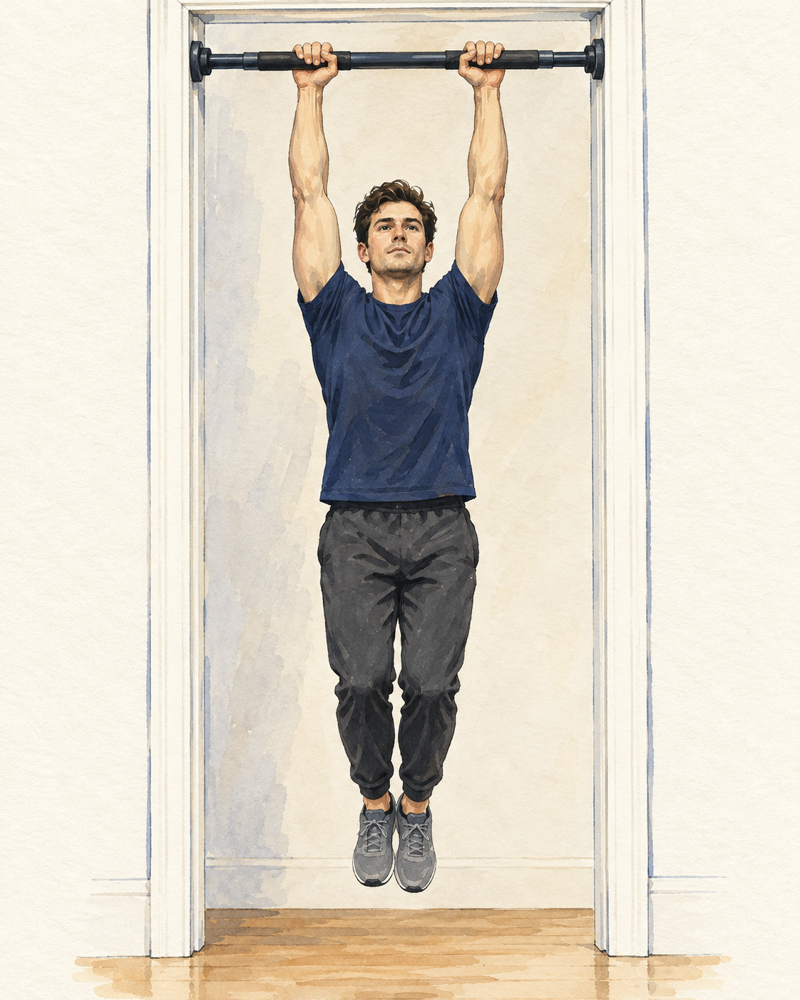

A
추천 방향실사 시범형
실제 사람과 제품을 보며 따라가는 방향.
FITABLE1 / 2세트
오늘의 첫 운동
매달리기
처음이라면, 짧게 시작해요.
실사 느낌 · 생성 시안몸을 흔들지 않고 버텨요.
10초한 번에
2세트나눠서
1분사이에 쉬기
실제 적용 때는 와이드 풀업바를 사용하는 모습을 촬영합니다.
이미지 스타일 시안 · 2026.10.22
같은 매달리기를, 다른 표현으로 비교해 보세요.
그림은 크게, 설명은 짧게 두었습니다.
세 이미지 모두 AI로 만든 정지 이미지 시안입니다. 실제 제품 촬영물이나 운동 영상이 아닙니다.
실제 사람과 제품을 보며 따라가는 방향.
오늘의 첫 운동

실사 느낌 · 생성 시안몸을 흔들지 않고 버텨요.
실제 적용 때는 와이드 풀업바를 사용하는 모습을 촬영합니다.
몸의 자세와 움직임에 집중하는 방향.
오늘의 첫 운동

3D 인체 · 생성 시안몸을 흔들지 않고 버텨요.
실제 적용 때는 관절 움직임과 제품 형상에 맞는 3D 모델이 필요합니다.
자연스러운 인체 비율과 부드러운 질감.
오늘의 첫 운동

일러스트 · 생성 시안몸을 흔들지 않고 버텨요.
설명서·입문 안내에는 잘 어울리며, 동작 비교에는 여러 자세가 필요합니다.
핏에이블에 적용한다면
제품을 실제로 어떻게 쓰는지와 사람의 움직임을 함께 볼 수 있습니다. 짧은 시범 영상에 준비 자세·쉬운 설명·타이머를 붙이는 구성이 좋겠습니다.
이 페이지는 이미지·화면 스타일 비교입니다. 운동 처방이나 실제 제품의 설치 방법을 확정하는 자료가 아닙니다.
다른 앱의 실제 공개 화면
앱스토어의 공개 이미지와 공식 운동 안내를 확인했습니다. 유료 앱 내부를 직접 조작한 비교는 아닙니다.